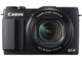
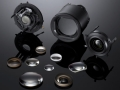
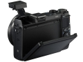

器材库 > 不可换镜头数码相机 > PowerShot G1 X Mark II

规格总览
发布日期
2014-02-12
厂家推荐价格
799.00 （美元）
影像规格
影像传感器
CMOS
影像传感器尺寸
1.5英寸
总像素
1500万
有效像素
1310万
影像处理器
DIGIC 6
静态图像尺寸
大：4352×2904、中1：3072×2048、中2：2048×1368、小：640×424、RAW：4352×2904
静态图像格式
JPEG, RAW
画幅比
3:2, 4:3
短片尺寸
1920×1080、1280×720、640×480
短片格式
MPEG4-AVC/H.264 , MP4
短片音效
MPEG - 4 AAC LC（立体声）
防抖系统
IS光学影像稳定器
镜头和对焦
镜头结构
14片/11组
非球面镜片
3片
焦距
12.5mm-62.5mm
等效35mm画幅焦距
24mm-120mm
最大光圈
f/2.0-f/3.9
光学变焦
5倍
数码变焦
4倍
最近对焦距离
（W）5cm～∞／（T）40cm～∞cm, 微距（W）5cm～50cm
对焦模式
智能面部优先/1点
曝光控制
测光模式
中央重点测光, 多分区评价测光, 点测光
曝光模式
P（程序自动曝光）, A（光圈优先自动曝光）, S（快门速度优先自动曝光）, M（手动测光曝光）
场景模式
人像/自动快门/星空/手持拍夜景/水下/雪景/焰火/创意滤镜
快门速度
60 - 1/4000秒
曝光补偿
±2EV以1/3EV级调整
ISO感光度
ISO100 – 12800
白平衡
日光, 白炽灯, 闪光灯, 阴天, 荧光灯, 自定义, 荧光灯H, 阴影, 自动, 水下
自拍
10秒, 2秒
连拍
约5.2张/秒（P模式）
拍摄模式
自动/P程序/ Tv快门优先/Av光圈优先/M手动/C1用户自定义1/C2用户自定义2/混合式自动/创意拍摄/ SCN特殊场景/创意滤镜/短片
闪光灯
内置闪光灯
弹出式
闪光涵盖范围
50cm～6. 8m（W）、1. 4m～3. 5m（T）
取景规格
LCD类型
TFT LCD
LCD尺寸
3.0英寸
LCD像素
104万
文件输入/输出
存储卡
SD/SDHC, SDXC
数据接口
USB2.0
视频/音频接口
AV 输出, HDMI 输出
无线功能
Wi-Fi, NFC
电源
电池
可充电锂离子电池
外观
颜色
黑色
尺寸
116.3×74.0×66.2mm
重量
516g
pangyun452016-03-06 16:41
倒挂金钩2015-03-16 22:154.69 分
操作性 5.00功能性 4.50美观性 5.00趣味性 4.50耐用性 4.50性价比 4.50解像力 5.00色彩还原 4.50
dedx2014-07-31 15:104.69 分
操作性 4.50功能性 5.00美观性 5.00趣味性 5.00耐用性 4.50性价比 4.50解像力 4.50色彩还原 4.50
产品图 / 样片


评测 / 相关文章
- 详细内容 （存档）
- 专业便携再升级 佳能G1X Mark II评测 （存档）
- ［试用］专业DC新领袖 佳能G1X Mark II实拍样张 （存档）
- ［资讯］支持新机 佳能香港发布DPP软件更新调整 （存档）
- ［试用］佳能G1XⅡ —— 我的随身机 （存档）